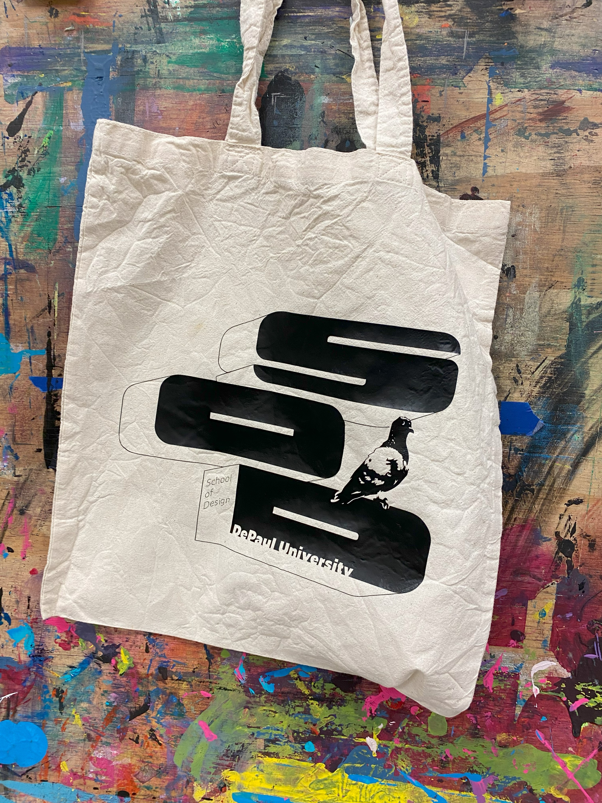
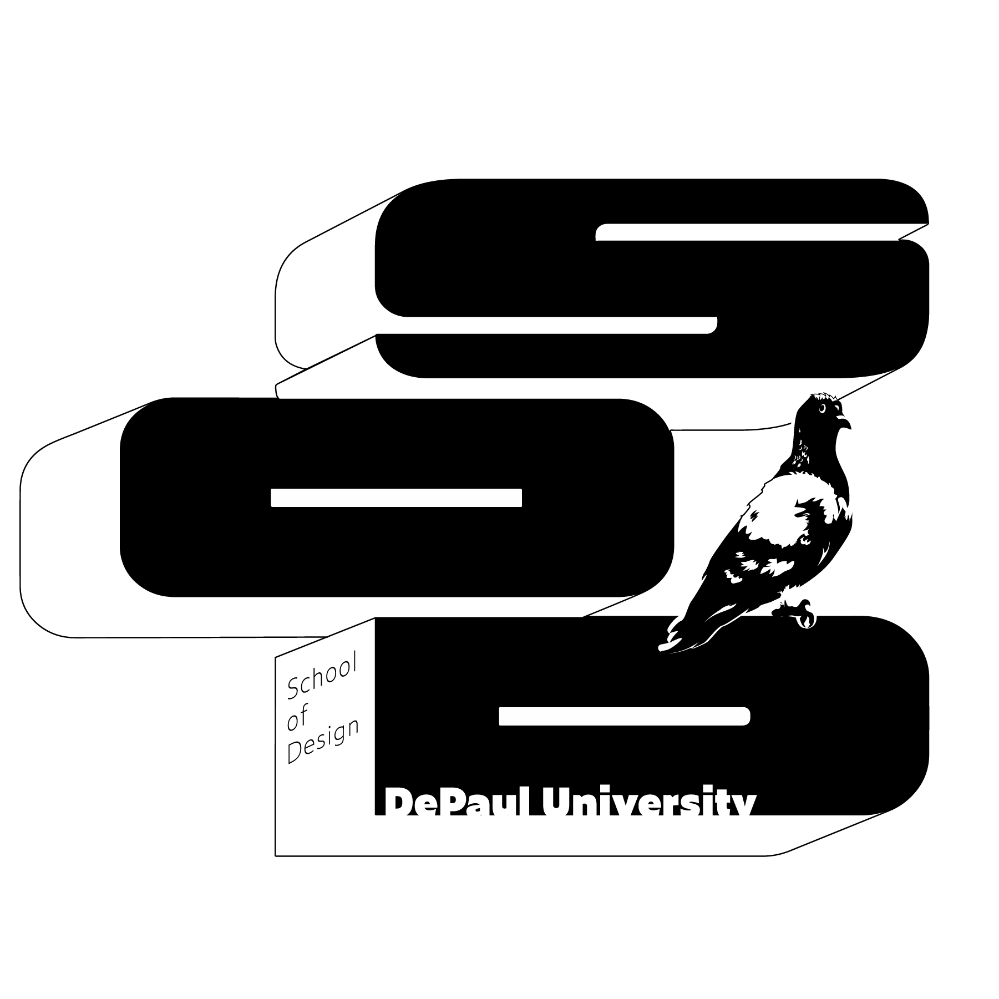
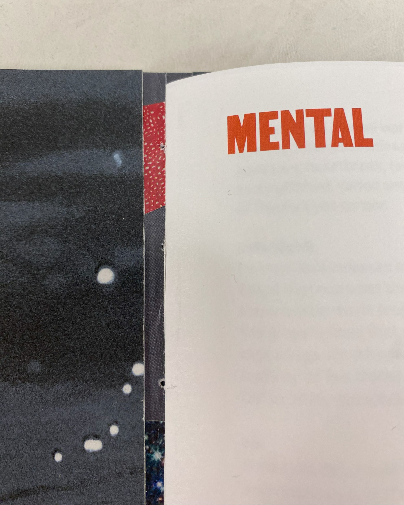
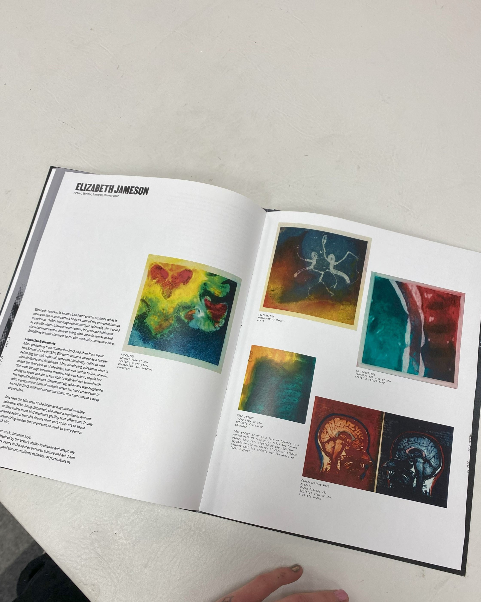
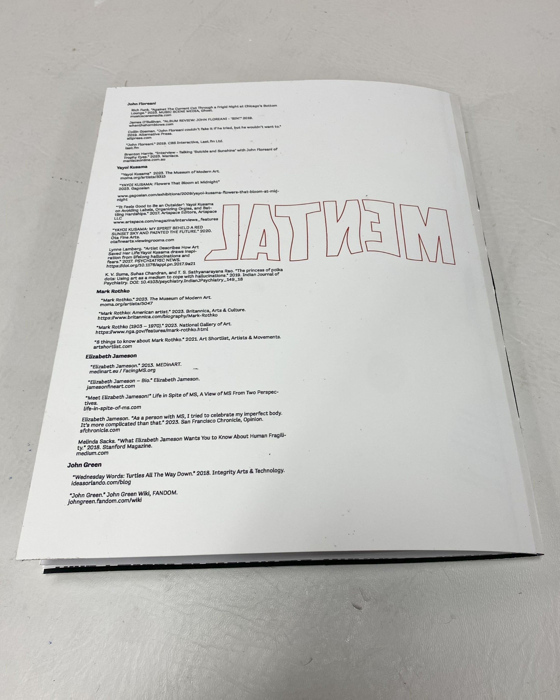
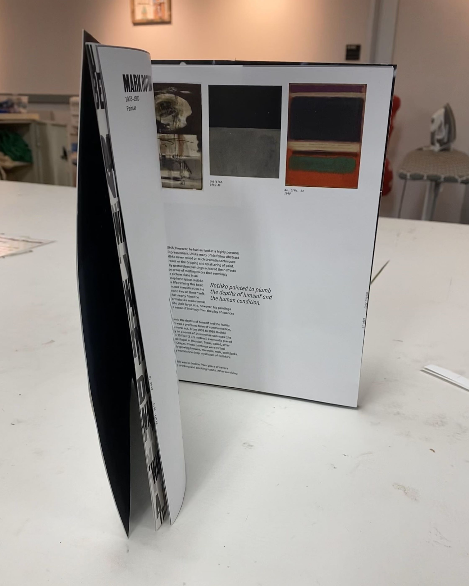
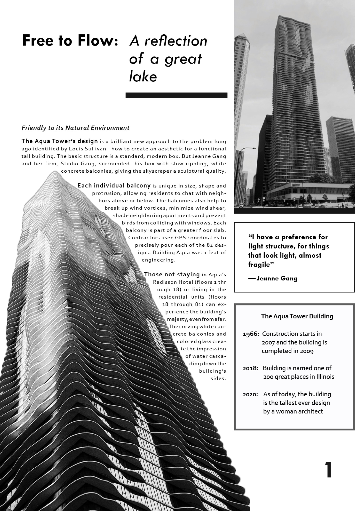
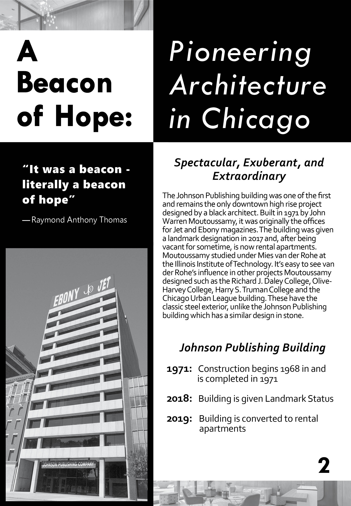
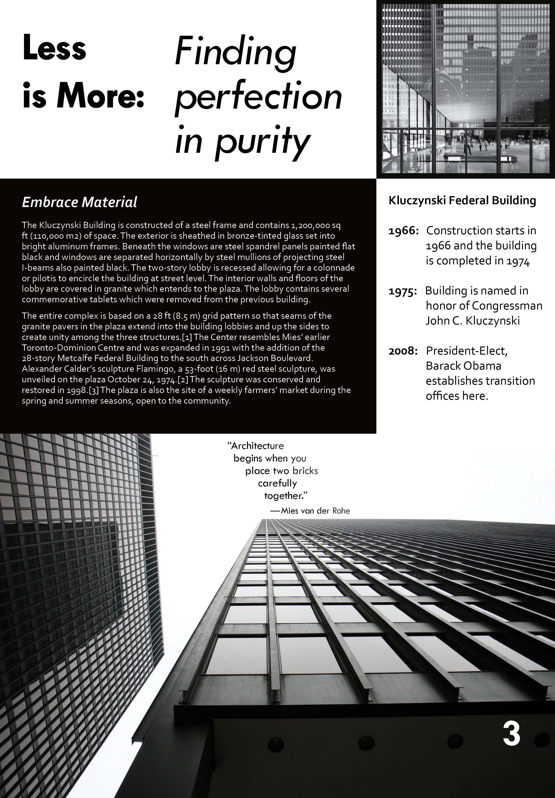

Graphic Design Class Work
Tangible Typography: "School of Design" tote bag


Adobe Illustrator
Playtime (1967) review - publication design
"Playtime" is a creative and experimental comedy film by Jacques Tati about the future of technology and consumerism, set in Paris. These spreads I designed incorporate a movie review of about 1,900 words and a variety of shots from the film. Throughout
the film, the audio is almost always distorted, loud when it shouldn't be or too quiet to make out and layered on top of each other. The main character is wanders around the city and feels disconnected from his environment. I wanted to capture
this distortion of audio through the typography through my choice in typefaces, scale, and layering of type with different colors.
Adobe InDesign & Photoshop
Bilingual Book of Hymns - print layout


In this project I realized how much I enjoy and appreciate the technical and detailed aspects of graphic design work as a challenge in problem-solving. It was important in my design strategy to put more visual emphasis on the verses written in Nahuatl,
rather than on the English translations. This guided design choices such as placing the English-translated title at the end of the hymn, rather than adjacent to the Nahuatl, while still being easy to find hierarchically. My guiding style was
minimalist, simple, and delicate. I found that this style was best suited to the type of content and for a layout that is not only text-heavy, but also balancing two different languages. I was inspired by the style of old Bibles with the two-column
layout, the smaller page dimensions, and the serif typeface.
Adobe InDesign
"Mental" - editorial design




«
»
Article Pages - Typography exercise

Image Dominant

Text Dominant

Balance
«
»
Adobe InDesign
Album Cover Concepts - Abstract Typography


This project was one of the first graphic design projects I worked on, blending abstract typography and experimental photography to create a conceptual album cover and brand image that represents the band and its music.
Trophy Eyes is
an Australian pop punk band formed in 2013, and this project focuses on their third studio album, The American Dream. This album features lyrics that are full of depth, storytelling, and a range of emotion which is reflected in the
messy and chaotic design choices of my final concept. My designs’ dynamic and layered typography captures the band’s identity and this album’s variety of music style and reflects some of their more ironic lyrics and upbeat, yet aggressive
sound. The first part of this exercise features only typography with the band name and album title used as the only graphic elements. The second set of photos shows the final concept for the album cover front and back. Combining my bright
and dynamic abstract photographs was an interesting challenge to balance with the original set of bold black and white cover concepts.
Adobe Illustrator & Photoshop
Digital Illustrations: Realism & Simplification
I enjoy sewing and tailoring clothing in my free time, and so I chose a spool of thread to render for this project. Surprisingly, it was not the detailed realism rendering that was difficult (although my laptop's loud fans and CPU may disagree),
but instead it was the simplification. It was a fun challenge in choosing just the right amount of detail, keeping it simple yet clear and easily recognizable, and in finding my style in digital illustration work.
Adobe Illustrator